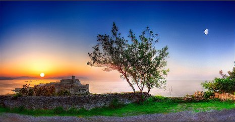

'그것이 알고싶다' 가짜 수산업자의 선물 리스트 들여다보니…구룡포 스캔들

어느 날 갑자기 포항 구룡포 출신 수산업자라며 등장한 한 재력가. 1000억 원대 유산을 상속받고, 페라O, 람보OOO 등 슈퍼카 수십 대와 선박 스무 척, 고급 풀빌라 펜션까지 소유했다고
알려진 그는 바로 김 대표다. 40대 초반 나이에 본업인 수산업뿐 아니라, 인터넷 언론사 부회장, 생활체육단체 회장까지 역임하며 누가 봐도 부러워할 만한 인생을 살고 있던 김 대표. 그러던 그가
지난 4월 사기, 공동협박, 공동공갈교사 혐의로 구속됐다. 그의 화려한 삶은 모두 '가짜'였던 것이다!
가짜 수산업자 김 씨의 미끼는 바로 '선동오징어' 사업이었다. 배에서 오징어를 잡자마자 급속 냉각하여 판매하는 사업에 투자하면 수개월 내 3~4배의 수익을 얻게 해주겠다고 피해자들을 유혹했다고
한다.
김 씨의 미끼에 걸려든 사기피해자들 중에는 김무성 전 의원의 친형, 서울 소재 사립대학 교수 등이 있는 것으로 알려졌다. 가짜 수산업자 김 씨에 의한 총 사기피해 규모는 약 116억 원 대.
그 중 김무성 전 의원의 친형은 86억 원이 넘는 금액을 김 씨에게 사기당한 것으로 전해진다.

'그것이 알고싶다' 가짜 수산업자의 선물 리스트 들여다보니…구룡포 스캔들
어느 날 갑자기 포항 구룡포 출신 수산업자라며 등장한 한 재력가. 1000억 원대 유산을 상속받고, 페라O, 람보OOO 등 슈퍼카 수십 대와 선박 스무 척, 고급
풀빌라 펜션까지 소유했다고 알려진 그는 바로 김 대표다. 40대 초반 나이에 본업인 수산업뿐 아니라, 인터넷 언론사 부회장, 생활체육단체 회장까지 역임하며 누가 봐도 부러워할 만한 인생을 살고
있던 김 대표. 그러던 그가 지난 4월 사기, 공동협박, 공동공갈교사 혐의로 구속됐다. 그의 화려한 삶은 모두 '가짜'였던 것이다!
가짜 수산업자 김 씨의 미끼는 바로 '선동오징어' 사업이었다. 배에서 오징어를 잡자마자 급속 냉각하여 판매하는 사업에 투자하면 수개월 내 3~4배의 수익을 얻게 해주겠다고 피해자들을 유혹했다고
한다.
김 씨의 미끼에 걸려든 사기피해자들 중에는 김무성 전 의원의 친형, 중견 언론인, 서울 소재 사립대학 교수 등이 있는 것으로 알려졌다. 가짜 수산업자 김 씨에 의한 총 사기피해 규모는 약
116억 원 대. 그 중 김무성 전 의원의 친형은 86억 원이 넘는 금액을 김 씨에게 사기당한 것으로 전해진다.